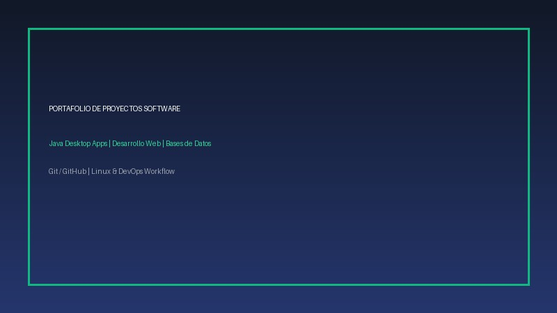

Proyectos Destacados
Selección de proyectos de software realizados durante las prácticas y proyectos personales:
- Aplicación de Gestión de Tareas (Task Manager): Aplicación de escritorio desarrollada en Java con interfaz gráfica, persistencia de datos y filtros por prioridad.
- Videojuego Arcade 2D en Java: Juego desarrollado aplicando patrones de diseño POO, bucle de renderizado y detección de colisiones.
- Sitio Web Personal de Currículum: Plataforma web semántica accesible, estructurada en HTML5 y estilizada con CSS3 responsivo.
Metodología y Ciclo de Vida del Software
Pasos secuenciales seguidos en cada proyecto para garantizar calidad y robustez:
- Análisis y definición detallada de requisitos del usuario.
- Diseño de arquitectura de datos, diagramas de clases y prototipado visual.
- Implementación del código fuente con buenas prácticas y control de versiones con Git.
- Ejecución de pruebas funcionales, verificación de errores y despliegue final.